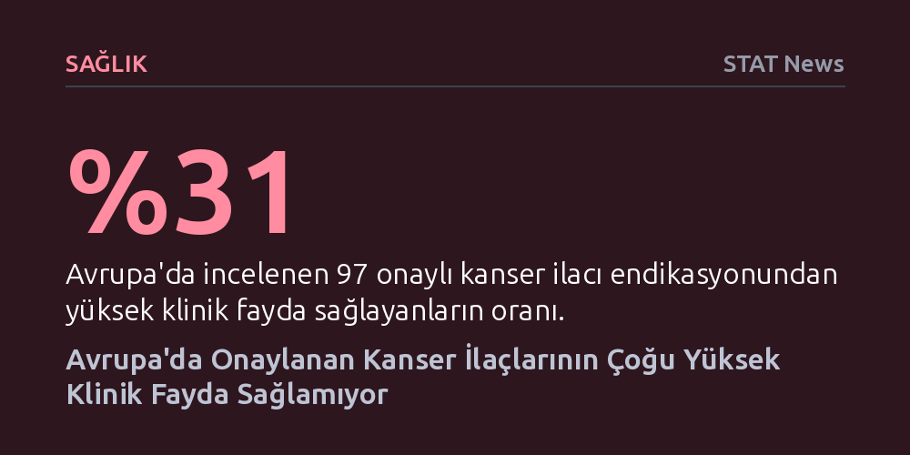

SAGLIK · STAT News · 2026-10-24
Avrupa'da son dört yılda onaylanan 63 kanser ilacının yalnızca yüzde 31'i yüksek klinik fayda sağlarken, bu başarılı tedavilerin yarısından fazlasını Asya merkezli üreticiler geliştirdi.
Yeni ruhsat alan her kanser ilacının hastalara üstün fayda sunduğu algısını yıkıyor ve küresel biyofarma inovasyonunun merkezinin Batı'dan Doğu'ya kaydığını belgeliyor.

Avrupa Birliği düzenleyici kurumlarının son dört yıllık dönemde onay verdiği yeni kanser tedavileri üzerine yapılan kapsamlı bir analiz, tıbbi onkolojideki yaygın bir kabulü sarstı. Kamuoyunda ve hasta çevrelerinde ruhsat alan her yeni ilacın kanserle mücadelede çığır açıcı bir gelişme olduğu düşünülse de veriler bambaşka bir tablo çiziyor. Ocak 2022 ile Temmuz 2026 tarihleri arasında onaylanan yeni nesil onkoloji tedavilerinin ezici çoğunluğu, hastalara yüksek düzeyde klinik fayda sunmaktan uzak kalıyor.
İnceleme kapsamında değerlendirilen 63 farklı kanser ilacına ait 97 kullanım alanı (endikasyon) mercek altına alındığında, bu endikasyonların yalnızca yüzde 31'inin yüksek klinik fayda sağladığı belirlendi. Daha da çarpıcı olanı, incelenen 63 kanser ilacından yalnızca 19 tanesinin en az bir yüksek faydalı endikasyona sahip olması. Geriye kalan onlarca tedavi ise düzenleyicilerden onay almayı başarsa da hastaların sağkalımına veya yaşam kalitesine kayda değer bir üstünlük katamıyor.
Araştırmada ulaşılan sonuçlar, onkoloji alanında küresel ölçekte en güvenilir standartlardan biri kabul edilen Avrupa Tıbbi Onkoloji Derneği'nin (ESMO) klinik fayda ölçekleri kullanılarak elde edildi. Bu ölçüm araçları, ilaçların sadece laboratuvar ortamında tümör boyutunu küçültmesi gibi dolaylı göstergelerine değil; hastanın genel yaşam süresini ne kadar uzattığı ve tedavi sürecindeki yaşam kalitesini ne derece koruduğu gibi doğrudan klinik çıktılara odaklanıyor.
ESMO'nun bu katı kriterleri uygulandığında, dört yıllık süreçte onay almış 97 endikasyon arasından yalnızca dokuz ilacın en üst dereceye layık görülmesi dikkat çekiyor. Bu durum, bir ilacın yasal olarak pazara giriş izni alması için gereken asgari düzenleyici eşikler ile klinik uygulamada hastaya sağladığı gerçek katma değer arasında ciddi bir uçurum bulunduğunu kanıtlıyor. Sağlık sistemleri ve geri ödeme kurumları yüksek maliyetli bu tedavilerin bütçesini karşılarken, hastalar çoğu zaman bekledikleri somut iyileşmeye kavuşamıyor.
Analizin ortaya koyduğu belki de en stratejik bulgu, yüksek klinik fayda sağlayan az sayıdaki ilacın nerede geliştirildiğiyle ilgili. Verilere göre, Avrupa'da onaylanan ve hastalara somut üstünlük sağlayan 30 yüksek faydalı endikasyonun yarısından fazlası sadece beş ilaç şirketinin imzasını taşıyor. Bu dar inovasyon havuzu, onkolojide gerçek değer üreten tedavilerin çok sınırlı bir çevrede toplandığını gösteriyor.
Bu beş üretici firmanın dördünün Çin ve Japonya merkezli olması ise küresel ilaç sanayisindeki güç dengelerinin kökten değiştiğine işaret ediyor. Uzun yıllardır Amerikan ve Avrupalı devlerin hakimiyetinde olan yeni molekül keşfi ve nitelikli biyoteknoloji yatırımları, Asya'daki Ar-Ge merkezlerine doğru kayıyor. Araştırmacılar da bu dönüşümü son on yıl içinde “inovasyon ekosisteminde köklü bir değişim” olarak nitelendirerek Doğu'nun artık sadece üretimde değil, en kritik kanser tedavilerinin geliştirilmesinde de liderliğe oynadığını vurguluyor.